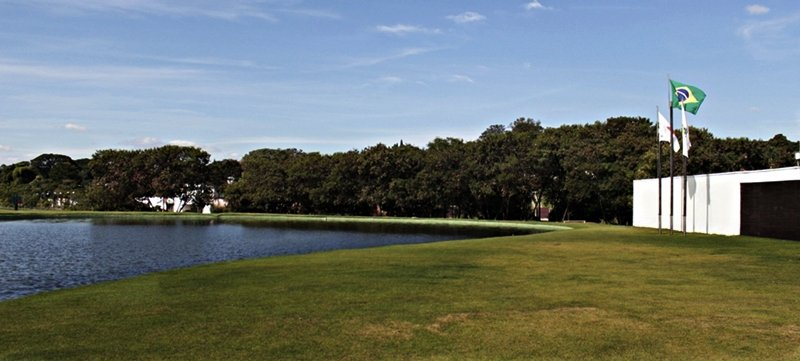
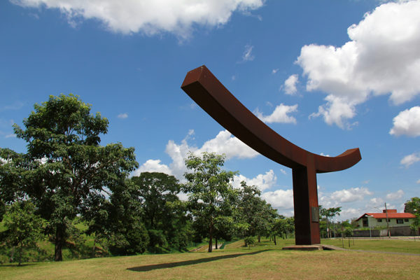
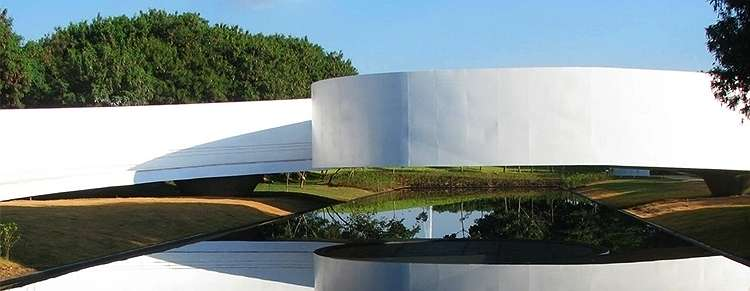

Parque Ecológico Promotor Francisco Lins do Rego
HISTÓRIA DO PARQUE
O Parque Ecológico Promotor Francisco Lins do Rego, mais conhecido como Parque Ecológico da Pampulha, é administrado pela Fundação Zoo-Botânica de Belo Horizonte e foi inaugurado em maio de 2004 em local antes chamado de Ilha da Ressaca. É um ponto turístico com importância ecológica ímpar: ele é resultado de uma história de recuperação ambiental e patrimonial. O projeto é dos arquitetos Gustavo Penna, Álvaro Hardy, o Veveco, e Mariza Machado Coelho.
Ao longo dos anos, com a ocupação desordenada em torno de toda a bacia da Pampulha, foi ocorrendo o processo de assoreamento da lagoa. A retirada e o agrupamento de milhões de metros cúbicos de sedimentos depositados na Lagoa deram origem ao Parque Ecológico da Pampulha. Sua área levou cerca de uma década para se estabilizar fisicamente, sendo então colonizada pela fauna e pela flora, num processo de intenso. São cerca de 300 mil metros de área verde, divididos em diversos espaços planejados para o lazer e para a proteção da flora e da fauna locais. O público pode desfrutar da Esplanada, local para prática de esporte, ideal para soltar pipas e receber grandes espetáculos, do Bosque, área arborizada muito utilizada para piqueniques, do Coreto, local que recebe várias apresentações culturais, do Slackparque, espaço para prática de slackline, e do Memorial Japonês, monumento construído em comemoração ao Centenário da Imigração Japonesa ao Brasil celebrando a amizade entre Minas e Japão.
Os parques devem desenvolver suas atividades seguindo a premissa de desempenhar e conciliar suas funções ambiental, educativa, sociocultural, estética e de lazer, de forma a propiciar a melhoria da qualidade ambiental da cidade e possibilitar e estimular a relação e integração da população urbana com a natureza.Funções ambientais:
Regulação microclimática; Proteção de uma amostra do ecossistema e da biodiversidade associada; Controle da poluição hídrica, atmosférica e sonora; Funções educativas:
Realização de atividades de educação ambiental para o ensino formal e informal; Estímulo à prática esportiva e cuidado com a saúde; Sensibilização ambiental dos visitantes por meio de sinalização interpretativa, distribuição de material educativo, eventos, etc; Funções socioculturais:
Provisão de espaço de interação social; Acesso universal e gratuito; Atendimento a pessoas com necessidades especiais; Diminuição do estresse da vida urbana; Funções estéticas:
Proteção de beleza natural; Diminuição da poluição visual; Descontinuidade da malha urbana; Funções de lazer:
Oferta de diversificadas possibilidades de lazer; Promoção de eventos com datas comemorativas; Oportunidade de recreação em contato com a natureza;
HOMENAGEM A FRANCISCO LINS DO REGO
O parque recebeu o nome em homenagem ao promotor público Francisco José Lins do Rego. Esse promotor, conhecido como Chico Lins, foi secretário da Promotoria de Defesa do Consumidor, o PROCON Estadual. Em 25 de janeiro de 2002, após investigação da máfia dos combustíveis no estado de Minas Gerais, que chegava a desviar até 15% da arrecadação total de ICMS do estado, o promotor foi assassinado com sete tiros.
Rego ingressou no Ministério Público de Minas Gerais (MPMG) em 1984. Atuou nas Comarcas de Jaboticatubas, Santos Dumont, Contagem e Conselheiro Lafaiete. Em Juiz de Fora, exerceu as Curadorias de Defesa do Meio Ambiente, Consumidor e Patrimônio Cultural, recebendo por sua atuação o título de Cidadão Honorário. Em Belo horizonte, atuou na área criminal de 1996 a 2000, quando foi designado para a Promotoria de Defesa do Consumidor. Quando investigava uma rede de fabricação e distribuição de combustível adulterado, foi assassinado.
O promotor também era poeta. Publicou o livro de poesias Inventário da noite (1999) e, sobre sua atuação na Curadoria de Defesa do Meio Ambiente, declarou:
Em Juiz de Fora desempenhei a Curadoria de Defesa do Meio ambiente e do Patrimônio Cultural, tendo lá cometido alguns atos poéticos - talvez o melhor de minha poesia - salvei algumas casas centenárias da demolição e algumas paisagens da poluição sonora, hídrica e atmosférica. Agora estou em Belo Horizonte, onde exerço minhas funções na 10ª Vara Criminal. Muitos entendem que seria um cargo incompatível para alguém que se intitula poeta. No entanto, penso o contrário. No contexto em que se vive - um mundo miserável de marginalizados e injustiçados, é preciso cobrar com sensibilidade em qualquer mister. Pedir a absolvição de um inocente; livrar de um longo tempo de cadeia quem já é refém da vida, também é um ato de poesia.MEMORIAL DE IMIGRAÇÃO JAPONESA
Inaugurado em 12 de maio de 2009, o Memorial da Imigração Japonesa é mais uma atração turística da Fundação Zoo-Botânica de Belo Horizonte. O monumento, construído no Parque Ecológico da Pampulha, celebra a boa relação entre Belo Horizonte, Minas Gerais e o país oriental, unidos por traços culturais, além de parcerias comerciais e tecnológicas.
O Memorial é uma iniciativa da Comissão Mineira para Comemoração do Centenário da Imigração Japonesa no Brasil, por meio da Associação Mineira de Cultura Nipo-Brasileira e do cônsul-geral honorário do Japão em Belo Horizonte, com patrocínio da Usiminas e Fiemg, e parceira do Governo de Minas e da Prefeitura de Belo Horizonte. No total, foram investidos R$ 8 milhões, parte com o apoio da Lei Federal de Incentivo à Cultura, o que resultou em uma obra que impressiona pela beleza, ineditismo e envolvimento das duas culturas.
Para a construção do monumento, foram utilizadas 350 toneladas de aço. Trata-se de uma ponte suspensa sobre um imenso espelho d’água, cujas extremidades representam de forma simbólica o Japão e Minas Gerais, separados geograficamente por um oceano, porém ligados em ideias e ideais. Ao centro, fica o pavilhão de arte contemporânea, uma sala pintada integralmente de vermelho, que estimula nos visitantes uma experiência sensorial. A cor foi escolhida por ser simbólica nas bandeiras do Japão e de Minas Gerais, além de servir como referência à cultura nipônica. No país oriental, o vermelho faz referência aos rituais de passagem, como nascimento, casamento e morte. O acesso ao pavilhão de arte contemporânea é feito a partir de duas rampas que remetem às duas culturas: uma cercada por ipês brancos, que representa Minas Gerais, e a outra, rodeada por cerejeiras, simbolizando o Japão.
O projeto é de autoria os arquitetos Gustavo Penna e Mariza Machado Coelho.PROGRAMAÇÃO
Dia da semana Público Horário de Funcionamento Terça a Quinta-feira Grupo agendado 08:30 às 17h Sexta a Domingo Público geral 08:30 às 17h ENTRADA FRANCA